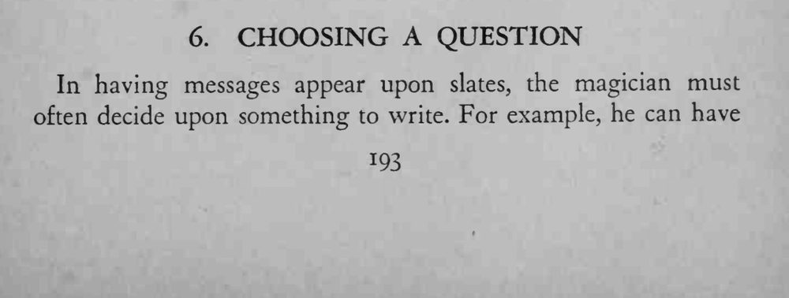
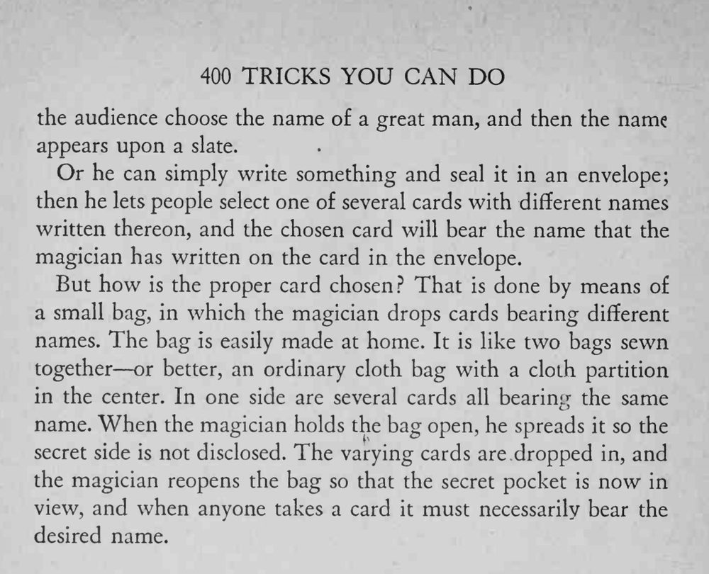

观众从布袋里随意抽出一张写着人名的卡片，上面的名字却正是魔术师事先封在信封里的那一个。
撑袋与转袋的动作要自然，不能让观众看到两个格子。


In having messages appear upon slates, the magician must often decide upon something to write. For example, he can have the audience choose the name of a great man, and then the name appears upon a slate. Or he can simply write something and seal it in an envelope; then he lets people select one of several cards with different names written thereon, and the chosen card will bear the name that the magician has written on the card in the envelope. But how is the proper card chosen? That is done by means of a small bag, in which the magician drops cards bearing different names. The bag is easily made at home. It is like two bags sewn together or better, an ordinary cloth bag with a cloth partition in the center. In one side are several cards all bearing the same name. When the magician holds the bag open, he spreads it so the secret side is not disclosed. The varying cards are dropped in, and the magician reopens the bag so that the secret pocket is now in view, and when anyone takes a card it must necessarily bear the desired name.